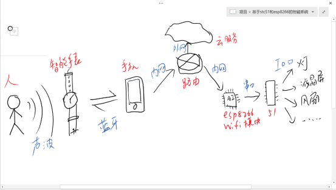
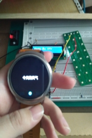
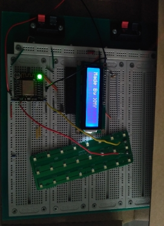
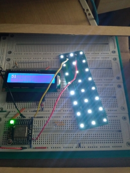
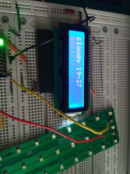
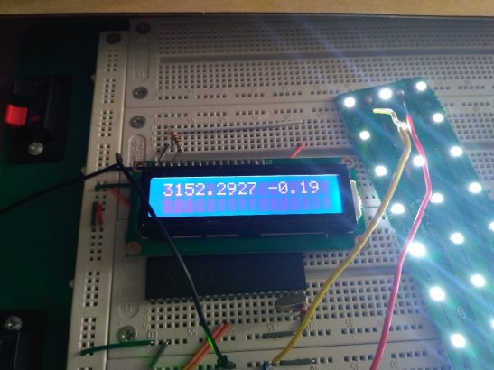
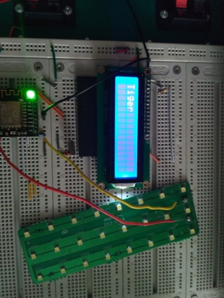

单片机课程设计
项目名称 智能助手系统
学生姓名 徐铭岳
学 号 20141375022
学 院 计算机与软件学院
专 业 物联网工程
指导老师 钱承山
2017年6月11日
一．项目概述
智能助手系统是一套软硬件结合的智能控制系统，用户以语音的形式通过智能手表发出指令或请求，该系统会解析语音，根据请求执行控制信号，达到控制硬件的目的。
目前该系统主要有五大功能：远程控制灯、远程控制风扇、天气查询、股票查询、翻译查询、语音计算器（未实现）。
二．项目分析
 示意图
红色为设备，蓝色为通讯方式
整个流程为：
1） 系统准备阶段：手表与手机建立蓝牙连接，手机与esp8266wifi模块连接
注册至云端服务平台，wifi模块与51单片机串口连接完毕。
2） 系统执行阶段：人发出语音指令（例：开灯！），智能手表通过听筒获取语音信息，通过蓝牙服务传给手机端解析，语音识别解析出汉字后，通过程序设定获得语义，根据语义的内容执行不同的程序。最终在手机端完成主要的计算，将计算的结果传送给远端云服务。远端云服务将消息传递给wifi模块，wifi模块通过串口通讯传递信息至51单片机，51单片机解析消息，最终通过IO端口实现对硬件的控制。
在整个系统中，可分为三个主要部分，第一部分包括{人，智能手表，智能手机，云}。该部分是整个项目的大脑，负责主要的计算，其输入为人的语音，输出为单片机易于解读的消息。可以说，经过该模块后，人的语音信息已经被完全的识别为具体的指令，剩下的只需负责执行即可。第二个部分包括{手机通讯、路由、
云服务、esp8266wifi模块}。该部分是整个项目的神经，负责从手机端到单片机端的信息传递。本项目是通过外网传递信息的，这意味着无论你身在何地都能在千里之外控制硬件。当然相比内网其速度会相应变慢。第三个部分包括{单片机、各种IO设备}。该部分是该项目的肌肉部分，负责对消息的物理执行（点亮灯，打开风扇，液晶显示等）。
三．具体实现
我们从从左至右的顺序简单写写其开发流程：
0） 环境搭建
为了实现该项目，需要搭建android开发环境、esp8266开发环境、51单片机开发环境。其中esp8266开发环境极为头疼，花了好久才弄好…而且硬件开发环境极为糟糕，为了烧录程序调试程序，得一遍遍拔出面包版插进面包板。我觉得真正的硬件开发一定是有调试环境的，比如仿真器什么的，要不然效率太低了。
工作量占比：15%
1） ticwear开发与android开发
本例中使用了ticwatch一代手表，为了实现本项目需要开发出手表端app与手机端app。鉴于只是个课程设计，只开发了最为精简，只要能实现功能的app。具体而言使用了ticwatch官方的sdk，开发了基本的手表与手机的通信软件。而在android端需要编写一些业务逻辑，由于时间紧凑，对于语义识别部分我只写了demo级别的程序，实际上工业级的语义识别应当采用机器学习的方式。
工作量占比：30%
2） ET-ilink云开发
为了使用第三方云服务，需要注册申请其授权码，然后根据其SDK分别在android端与esp8266端编写相应的程序，以实现其互相通信。本部分相当简单，纯抄写代码。
工作量占比：5%
3） esp8266 freeRTOS开发
这一模块是对我而言很新的部分，因为别的部分我多多少少也做过一些，这部分我是第一次接触。Esp8266是一个成熟的wifi模块，其高度集成化，内部实际上是一个32位MCU，并内置了freeRTOS。本模块有多种使用方式，可以作为一个从机，就是说以串口连接主机，然后主机发送什么，它就一顿计算然后返回结果，没有自主性。也可以作为独立的主机。这个模块既可以自备操作系统也可以不含操作系统。总之灵活性相当高。该模块是我在一个平台免费申请的，其本身也相当便宜，只要10-15RMB。这个价格真的太惊人了…当然或许是我没见识。对于这个模块我思考了很久，最终选择了以freeRTOS+某平台SDK的方式进行外网开发。开发语言为C语言。基于这款芯片拓展开来我也简单的了解一下半导体的产业链，了解了张忠谋开创的芯片设计与芯片代工的商业模式，也对浦口区的半导体产业有了新的观点。
工作量占比：30%
4）51单片机开发
这部分主要是两个程序：一个是串口中断处理程序，一个是IO控制程序
其中对串口的处理我遇到了一些困难，最终用一种投机取巧的方式解决，我感觉正常的串口处理不是这样做的。对于外设控制主要就是LCD1602的控制。这个模块的程序到处都是，我没有自己去根据时序逻辑图去写它，而是直接抄了一份，改了改端口就行了。
工作量占比：10%
总开发时长：约一周
四：项目展示

手表端语音识别硬件结构图
//手机端调试程序

开灯 天气查询
//PM2.5查询
//当前温度查询

股市查询

翻译英语
五：一些问题
回顾一下开发中遇到的比较棘手的问题，想到哪写到哪。
1）esp8266的开发环境配置
本模块只能在linux下进行开发，官方已经配置好了相关的虚拟机文件，但是导入后编译程序失败。经研究后认为其原因为该linux一些库程序版本不兼容。最终找到不兼容的接口，将其修改为可以兼容的接口程序，目前来看没有问题。
2）51单片机与esp8266的串口通讯问题（未解决）
编写了51单片机串口中断处理程序，双方波特率均为4800。然而在实际通信中无论esp8266发送多长的字符串，51单片机都只能收到前两个字符。
经思考后我认为原因如下：esp8266不间断的发送字符，而在第一个字符被51单片机的SBUF收入后，引发中断处理程序。此时执行中断程序，无暇顾及esp8266传来的其他字符。因此造成数据漏传。经过实验后，我设置esp8266每发送一个字符就delay10ms，给单片机以充分的处理时间。成功解决了问题。但我不认为这是正确的手段，正常的串口通信应该不是这么做的。
3）smartconfig配置问题（导致我延时迟交的问题）
Smartconfig是一种在设备没有输入环境时传送wifi的ssid和密码的技术
比如说你买了一个智能冰箱，放在家里，怎么和路由器相连呢？冰箱上没有键盘，你没法告诉它家里的wifi和密码是什么。此时可使用smartconfig（又名airkiss）技术，其原理为使用手机的混杂模式，发送特制的数据帧，wifi的ssid和密码隐藏在帧头，通过某些协议将信息传递出去。在本项目开发与调试中我一直使用的宿舍的路由器，在展示时我需要手机开热点作为路由与esp8266相连。我本以为只要手机热点的ssid和密码与宿舍路由器相一致就可自动连接，然而并非如此。对于这个问题我一开始是以为手机热点的网络与路由器的网络不一致导致的。一个是adhoc自组网，一个是ap网络，正常情况是互通的。但如果细腻到数据链路层甚至物理层，那就有点说不清了。后来我的解决方案是从新进行换一台手机进行smartconfig广播热点信息，得以解决。至于为什么一开始同样的ssid和password的wifi不能连接，我很难说得清楚了。里面涉及到复杂的协议细节分析。
4）硬件玄学（未解决）
本项目基本开发完毕后，我需要将esp8266的调试环境（小面包板）移植到工作环境（大面包板）。然而神奇的事情发生了，在连线没有问题的情况下，esp8266疯狂报错。我检查了接线没有问题，然后试着将vcc和gnd线靠近esp8266模块，报错频率变低，但是lcd1602变暗。于是我觉得这可能是供电问题。于是我找到一个平衡点，使得在不报错的情况下lcd1602还有可读性。
勉强成功，说实话我现在都不知道明天的展示会不会报错。。。这个东西根本不讲道理的，同样的接线我vcc哪怕换了一个格子它就报错，我充电宝换一个接口都报错，甚至原封不动，关闭重开它都结果不一样。我觉得这就是面包板的问题了，要么是充电宝的问题，或许是我线路设计的不好，导致整个系统非常不稳定。但这就不是我的领域了，应当有专门的pcb专家进行线路设计。
六：遗憾与展望
我记得我们学院的官网(cs.nuist.edu.cn)上有一个物联网展示(iot.nuist.edu.cn)
上面可以获取学校内各节点位置的相关传感信息。本来我还想借用下这个数据的，没想到竟然关闭了，有些遗憾。还有就是本项目的肌肉部分还是单薄了一些，lcd1602只能显示极为有限的英文与数字，能力有限。而IO口只有一个灯和风扇，其实可以更好玩的。我觉得对大部分外设而言，数字世界和物理世界的接口只需要简单的一个继电器即可。大脑部分做的也非常简陋，如果能真正的做出像jarvis那样的人工智能助理系统那就有趣多了，比如说你可以吩咐他“某主播上线的时候你就狂闪家里的灯”，或者“下雨的话让晾衣架自动收衣服”，或者“选的股票涨停了就把家里的灯都变成红色”，或者“冰箱里没东西了就自动向天猫超市发送订单”。这些看似科幻的事情其实实现起来并不难，只需要统一一下外设接口，并且需要一点点NLP（自然语言处理）以及人工智能。实际上本项目的架构非常易于拓展，很容易就丰富其内容。希望有一天我经验更丰富并且非常闲的慌就去把这做一个商品级项目。
七：总结
这是我第一次做软硬结合的项目，我觉得我对硬件开发的一些流程与惯例还不熟悉。对一些电学的常识有非常明显的缺失。应该在这方面留意。总之软硬件结合之后更为有趣，威力也更大。身为物联网工程专业的学生，应当比纯CS和EE的学生视野更广（普遍来说），对软件硬件的总体理解也应当更为广阔（普遍来说）。或许在算法研究与软工开发的能力上低于CS学生，在硬件研发与模数通信上弱于EE学生。但是物联网专业的学生或许能去实现一些更为有趣的，创造性更高的工程性项目。或许这也是本门专业成立的初衷。